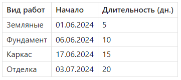

Диаграммы Ганта

Андрей, приветствую! В этом уроке мы построим диаграмму Ганта в Excel. Это отличный способ наглядно представить сроки выполнения работ на объекте. Хотя в Excel нет встроенного шаблона для Ганта, мы сможем построить его с помощью обычной гистограммы с накоплением, немного подправив форматирование. В результате ты получишь график, который легко обновляется, визуально понятен и отлично смотрится в презентациях и отчетах. Поехали!
Что такое диаграмма Ганта
Диаграмма Ганта — это горизонтальная шкала времени, показывающая:
- когда начинается задача;
- сколько она длится;
- и какие задачи идут параллельно.
Для инженеров это незаменимый инструмент: ты сразу видишь, в какие даты начинаются монолитные, отделочные, монтажные и другие виды работ.
Как построить диаграмму Ганта в Excel
Исходные данные:

📌 Шаги:
- Добавь вспомогательный столбец «Начало (число)»
Excel работает с датами как с числами. Просто скопируй столбец «Начало» в новый столбец и убедитесь, что он в числовом формате. - Построй гистограмму с накоплением:
Выдели столбцы «Вид работ», «Начало (число)», «Длительность»
Вставка → Гистограмма с накоплением (Stacked Bar) - Преобразуй график в Гант:
Убери заливку у серии «Начало» (форматировать серию → «Нет заливки») — останется только цветная полоса длительности.
Переверни порядок оси задач (правая кнопка по вертикальной оси → параметры → «Обратный порядок») - Настрой шкалу осей:
По оси X (дата): установи минимальное и максимальное значение, чтобы не было пустого пространства.
Отобрази даты на оси X (если Excel показывает числа — смени формат на «Дата»).
💡 Полезные советы и нюансы
Совет 1. Скрытая серия — основа графика.
Нулевая заливка у серии «Начало» создает смещение полос на нужную дату. Без нее диаграмма будет бесполезна.
Совет 2. Обязательно переворачивай порядок задач.
По умолчанию Excel размещает первую задачу внизу — не по Гантовски.
Совет 3. Работай с диапазонами дат.
Чтобы диаграмма не была «растянутой», вручную настрой минимальное и максимальное значение оси X.
Совет 4. Используй цветовую кодировку.
Разные цвета для разных типов работ (монолит, отделка, инженерка) — лучше воспринимаются визуально.
Совет 5. Добавь подписи или линии-сетки.
Легко читаются временные рамки, если добавить сетку или отобразить значения длительности над полосами.
Совет 6. Обновление данных — вручную.
Это не автоматическая диаграмма. При изменении дат нужно обновить или перестроить график.
Совет 7. Альтернатива — использовать Excel-шаблоны или Power BI.
В сложных проектах диаграмму Ганта лучше вести в Project или Power BI — но для быстрых задач Excel отлично подходит.
Практическая часть
📁Создай таблицу с данными (можно использовать предложенные выше):
- Добавь вспомогательный столбец с числовым значением даты начала.
- Построй диаграмму с накоплением:
Ось категорий — «Вид работ»
Суммируемые серии — «Начало (число)», «Длительность» - Оформи:
Убери заливку у «Начало»
Назначь цвета задачам
Переверни порядок зада
Настрой ось времени
4. Добавь подписи:
Дата окончания = Начало + Длительность
Вынеси как подпись над каждой полосой (опционально)